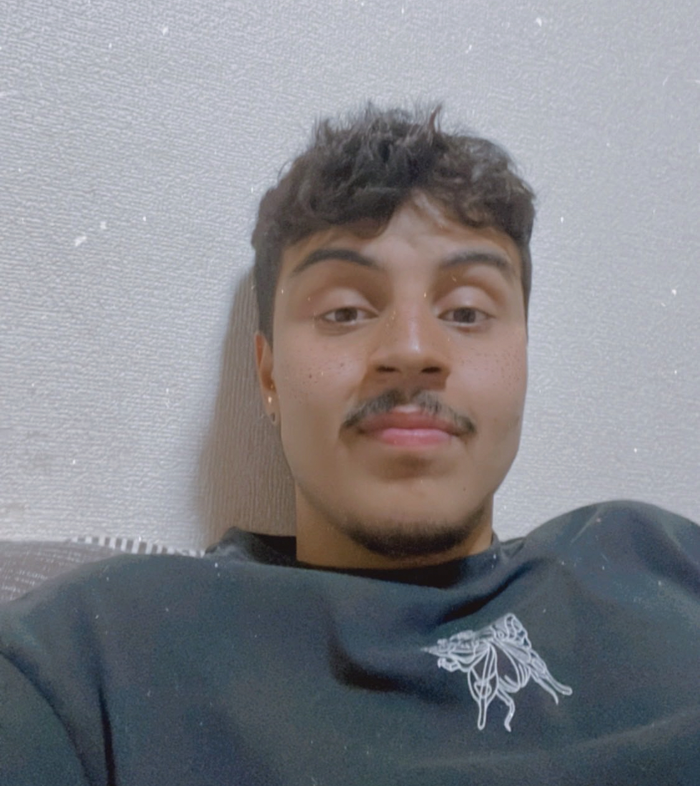

Currículo
experiência profissional:
SUPERVISOR DE ROTEIRO - OPERAÇÃO CINEMA (2023)
Atuei como supervisor do canal Operação Cinema, apresentado por Gabriel Dearo, cujo conteúdo fala bastante sobre filmes, séries, desenhos e cultura pop no geral. Como supervisor, eu era responsável por revisar e garantir que todos os roteiros estivessem no padrão proposto pelo dono do canal, revisando, corrigindo e dando sugestões ao restante da equipe de roteiro conforme o necessário.
ROTEIRISTA - FALAIDEARO (2021 - presente)
Desde 2021, trabalho como freelancer desenvolvendo roteiros para o Canal Falaidearo. Utilizando técnicas de roteiro e de comédia, pude contribuir com muitos roteiros que foram muito bem aceitos pelo público alvo do canal. Sempre mantendo o padrão de qualidade com diálogos engraçados e cenas dinâmicas, sendo fiel ao cânone de personagens do universo "As Aventuras de Mike" de Gabriel Dearo.
ROTEIRISTA - JOOJ (2023)
Como roteirista no Canal Jooj Natu, tive a oportunidade de criar roteiros cativantes voltados para o público adolescente e infantil. Mais uma vez, seguindo os direcionamentos do criador do canal, pude me adaptar ao seu estilo de humor, de modo que o resultado final dos vídeos fosse satisfatório ao público bem como ao cliente.
SUPERVISOR DE ROTEIRO - FALAIDEARO (2023)
Atuei como supervisor do canal Falaidearo, um canal de humor criativo infanto-juvenil. Fui responsável por revisar e garantir que todos os roteiros estivessem de acordo com o padrão proposto pelo dono do canal, Gabriel Dearo. Meu papel incluía a revisão, correção e sugestões para a equipe de roteiristas, conforme necessário. O conteúdo do canal abordava de forma criativa e bem elaborada o cotidiano, proporcionando um ambiente divertido e inspirador para os espectadores
ROTEIRISTA - WEBSÉRIE DE HUMOR
Em 2022, tive a oportunidade de trabalhar em conjunto com um colega de trabalho na escrita de uma Websérie de humor para o canal Falaidearo. Nessa colaboração, fui responsável pelo desenvolvimento da trama serializada, bem como das tramas individuais de cada episódio, além dos diálogos e piadas. Com um trabalho em equipe harmonioso e eficiente, conseguimos entregar roteiros que satisfizeram as expectativas do cliente. Infelizmente, a série não foi ao ar devido a motivos que não estavam relacionados à qualidade do roteiro.